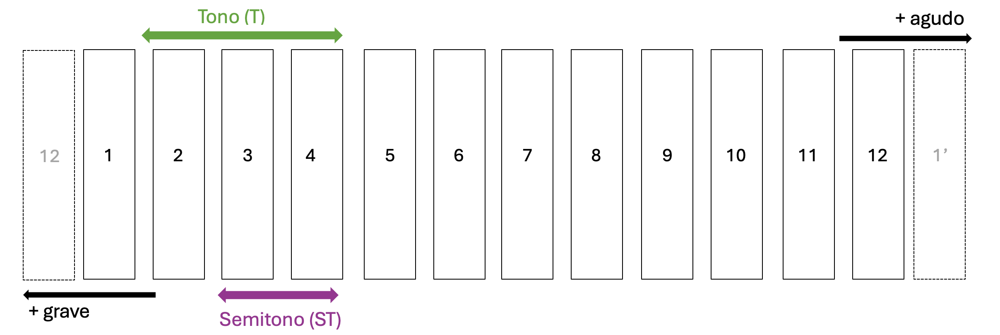

En la actualidad usamos doce sonidos para componer música. Las vamos a nombrar del número 1 al 12.

Una vez llegamos a la nota 12 vuelven a repetirse, pero sonando las notas más agudo. Lo mismo si bajamos de la nota 1, sonarían más graves. A la distancia mínima que hay entre cada sonido se le conoce como semitono (ST). El doble de la distancia de un semitono se le llama tono (T). De estas doce notas, ninguna es más importante que otra, pero cuando vamos a componer una canción no usamos siempre las doce. Hacemos una selección, es decir, creamos escalas.